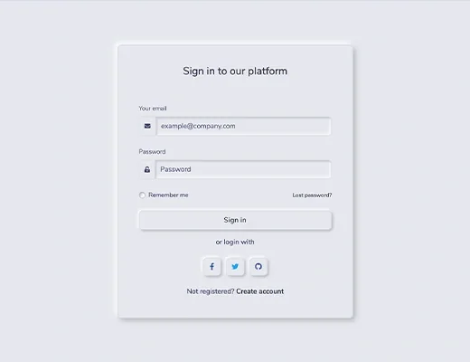
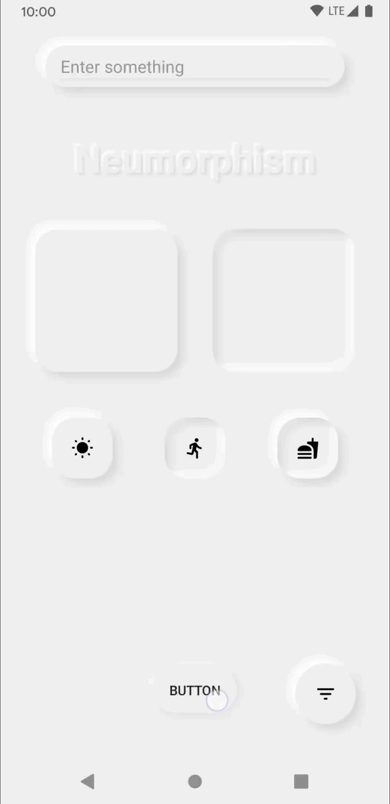
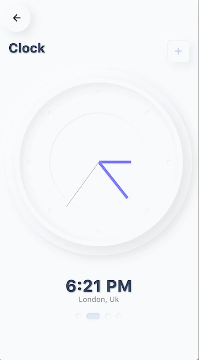
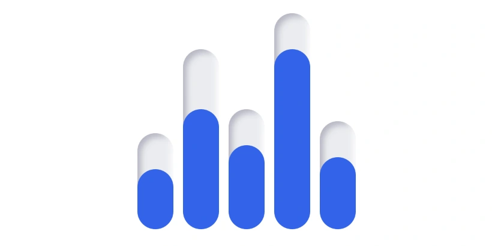

選定理由・代表作
カードと入力欄はほぼ同じ色です。カードの外側には影を落とし、入力欄の内側には影を入れることで、同じ面に出っ張りとくぼみを作り分けています。
作品・制作の例7件を紹介しています。実作品画像4点、参照・関連画像0点。画像の収集は継続中です。
現代の画面表現・説明用の分類
Neumorphism
背景と似た色のボタンに、明るい影と暗い影をつけます。すると、同じ材料から少し浮き出たように見えます。ニューモーフィズムは、このような柔らかい凹凸を使う画面表現の呼び名です。
実作品を見る

画像を表示できませんでした。下の出典ページで確認できます。
Themesberg / 2020年（プロジェクト公開）
カードと入力欄はほぼ同じ色です。カードの外側には影を落とし、入力欄の内側には影を入れることで、同じ面に出っ張りとくぼみを作り分けています。
© 2020 Themesberg。制作元のプレビューをWebP化。
出典で作品・資料を見る ↗実作品を見る

画像を表示できませんでした。下の出典ページで確認できます。
アン・ソンヨン（fornewid） / 2020年（プロジェクト公開）
並んだ四角は、左がふくらみ、右がくぼんで見えます。作者がAndroidで発表した試作では、大きさも色も似た面が、光と影の向きだけでどう変わるかを試せます。
Sungyong An / fornewid。公開GIFから一場面を抜き出し、縮小してWebP化。
出典で作品・資料を見る ↗実作品を見る

画像を表示できませんでした。下の出典ページで確認できます。
Idean／Flutter-Neumorphic 開発チーム / 2020年（プロジェクト公開）
文字盤の縁は、輪郭線を引かず、円の外に落ちる影で示しています。色の付いた針が現在時刻を伝え、文字盤の厚みはその後ろに静かに残ります。
Idean（www.idean.com）。公開見本をWebP化。
出典で作品・資料を見る ↗実作品を見る

画像を表示できませんでした。下の出典ページで確認できます。
コスタ・チョン / 2020年（プロジェクト公開）
白い溝の上端にだけ薄い影がつき、青い量の部分は平らなままです。ボタンで使うくぼみの表現を、データを読むための器にも応用した例です。
© 2020 Costa Chung。公開見本をWebP化。
出典で作品・資料を見る ↗歴史上の定評ある代表作と断定する選定ではありません。制作側の説明や教材から、表現が確かめられる例を区別して掲載しています。
参考教材（同じ記事のカード比較図）
浮いているカードと、背景から浮き出る面を比較する教材です。
作品・資料の出典を見る ↗原題：Neumorphism in user interfaces：カードの比較
ミハウ・マレヴィチ／ハイプフォー / 公開年未確認 / 制作者による解説図
日本語の見出しは読みやすさのための呼び名・説明名です。原題は記録欄に示しています。
画像の転載条件は未確認。出典の公開は転載許諾ではありません。
参考教材（同じ記事の押下状態図）
内側の影だけで状態を伝える難しさを示しています。
作品・資料の出典を見る ↗原題：Neumorphism in user interfaces：押した状態の比較
ミハウ・マレヴィチ／ハイプフォー / 公開年未確認 / 制作者による操作部品の研究
日本語の見出しは読みやすさのための呼び名・説明名です。原題は記録欄に示しています。
画像の転載条件は未確認。出典の公開は転載許諾ではありません。
参考ツール
色や影を調整して、見え方を試す実装例です。
作品・資料の出典を見る ↗原題：Neumorphism.io
ニューモーフィズム・ドット・アイオーの制作チーム / 継続公開／初公開年未確認 / CSS生成ツール
日本語の見出しは読みやすさのための呼び名・説明名です。原題は記録欄に示しています。
画像の転載条件は未確認。出典の公開は転載許諾ではありません。
ユーザーインターフェースの公式見本画面
カードと入力欄はほぼ同じ色です。カードの外側には影を落とし、入力欄の内側には影を入れることで、同じ面に出っ張りとくぼみを作り分けています。
作品・資料の出典を見る ↗原題：Neumorphism UI — Sign in
Themesberg / 2020年（プロジェクト公開） / ユーザーインターフェースの公式見本画面
ユーザーインターフェースの公式見本画面
並んだ四角は、左がふくらみ、右がくぼんで見えます。作者がAndroidで発表した試作では、大きさも色も似た面が、光と影の向きだけでどう変わるかを試せます。
作品・資料の出典を見る ↗原題：Neumorphism in Android
アン・ソンヨン（fornewid） / 2020年（プロジェクト公開） / ユーザーインターフェースの公式見本画面
ユーザーインターフェースの公式見本画面
文字盤の縁は、輪郭線を引かず、円の外に落ちる影で示しています。色の付いた針が現在時刻を伝え、文字盤の厚みはその後ろに静かに残ります。
作品・資料の出典を見る ↗原題：Flutter-Neumorphic — Clock
Idean／Flutter-Neumorphic 開発チーム / 2020年（プロジェクト公開） / ユーザーインターフェースの公式見本画面
ユーザーインターフェースの公式見本画面
白い溝の上端にだけ薄い影がつき、青い量の部分は平らなままです。ボタンで使うくぼみの表現を、データを読むための器にも応用した例です。
作品・資料の出典を見る ↗原題：Neumorphic SwiftUI — Bar chart
コスタ・チョン / 2020年（プロジェクト公開） / ユーザーインターフェースの公式見本画面
ミハウ・マレヴィチの解説では、カードの見え方だけでなく、押した状態が分かりにくい問題も扱われています。人気のある見た目と、使いやすさは別に考えます。
背景と部品を近い色にすると、境目が影に頼りやすくなります。
本文や記号まで薄くすると読みにくくなります。
外側の影は浮き出た形、内側の影はくぼみを思わせます。
部品が目立たない場合、押せる場所とただの飾りを見分けにくくなります。
ガラスモーフィズムのように背景を透かすことが中心ではありません。太い輪郭を使うネオ・ブルータリズムとも対照的です。
選択中かどうかは、影だけでなく文字、記号、線などでも伝えましょう。
柔らかな影と光で操作部分を浮かせたり、くぼませたりする四つの実装例を見比べます。
作品・制作の例7件を紹介しています。実作品画像4点、参照・関連画像0点。画像の収集は継続中です。